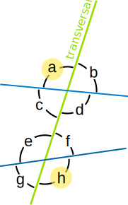

Alternate Exterior Angles
When two lines are crossed by another line (called the Transversal):
Alternate Exterior Angles are a pair of angles on the outer side of each of those two lines but on opposite sides of the transversal.
|
In this example, these are two pairs of Alternate Exterior Angles:
And
|
 |
To help you remember: the angle pairs are on Alternate sides of the Transversal, and they are on the Exterior of the two crossed lines.
Parallel Lines
When the two lines being crossed are Parallel Lines the Alternate Exterior Angles are equal.
(Click on "Alternate Exterior Angles" to have them highlighted for you.)